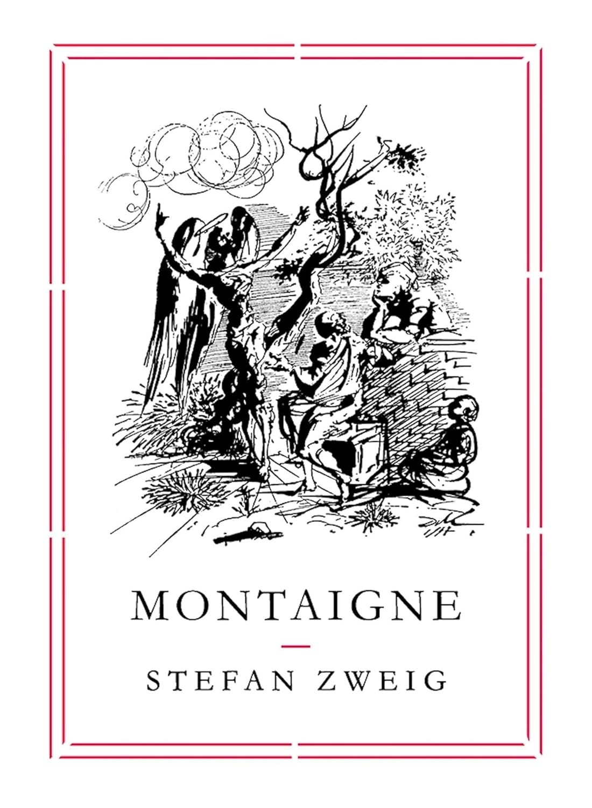
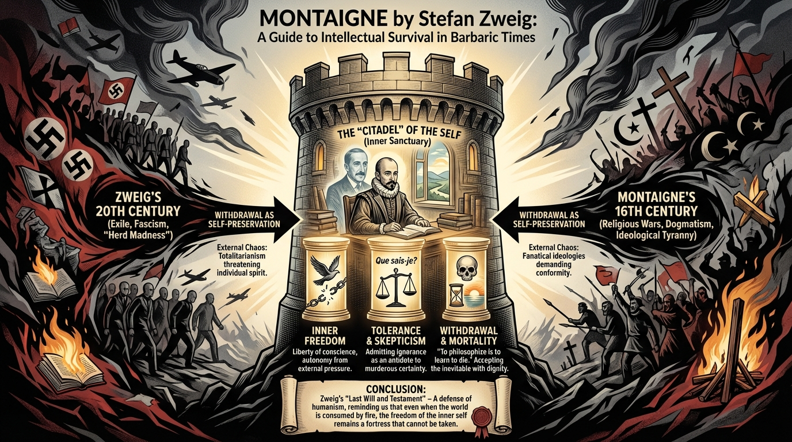

isbn-13: 9781782271031
Paperback
AI Generated Content
Generated by gemini-3-pro-preview

Introduction
Stefan Zweig’s Montaigne is a biography written under extraordinary circumstances. Drafted in Brazil during the final months of Zweig’s life (1941–1942), the work is as much a reflection on the author’s own era as it is a study of the 16th-century French philosopher. Zweig, a Jewish intellectual in exile from Nazi-occupied Europe, discovered a profound kinship with Michel de Montaigne, seeing him not merely as a historical subject but as a “soul brother” and a guide for survival in barbaric times [1]. This book, which remains an unfinished fragment due to Zweig’s suicide, is less a traditional linear biography and more a personal meditation on how to maintain intellectual integrity when the world descends into madness. It stands as a testament to the enduring power of humanism and the sanctuary of the individual mind.
Overview of the key points
The central narrative of the book tracks Montaigne’s deliberate withdrawal from public life. Zweig highlights how Montaigne, living through the chaotic French Wars of Religion, chose to resign from his public office and retreat to his famous tower. Zweig interprets this not as an act of cowardice or escapism, but as a heroic and necessary effort to save his own soul [3]. By stepping back, Montaigne refused to serve the fanatical ideologies of either the Catholics or the Protestants, choosing instead to serve the truth of his own experience. This act of self-preservation allowed him to remain human in an inhuman age.
Zweig draws a sharp and deliberate parallel between Montaigne’s 16th century and his own 20th century. He argues that both eras were plagued by “herd” madness, where dogmatism and totalitarians threatened to crush the individual spirit [1]. In this context, Montaigne’s writing becomes a form of salvation. In a world where nothing was certain and external authorities were corrupt, Montaigne turned his gaze inward, observing his own changing self as the only stable reality. This “biography of a mind” emphasizes that Montaigne’s greatest achievement was not his public service, but his relentless quest to understand and preserve his own inner nature.
Overview of the key themes
Inner Freedom
The dominant theme of the work is the preservation of inner freedom. Zweig portrays Montaigne as the ultimate champion of liberty—specifically, the liberty to think and feel for oneself regardless of external pressures. In an age of enforced conformity, Montaigne’s insistence on the autonomy of his own conscience is presented as a radical and courageous act.
The “Citadel” of the Self
Zweig employs the metaphor of a “citadel” to describe the private realm of the individual. Referencing Montaigne’s physical tower, Zweig argues that every person must build a sanctuary that “no tyrant can breach.” This inner fortress is where one remains sovereign over their own thoughts, safe from the demands of the state, the church, or the mob [3].
Tolerance and Skepticism
In direct opposition to the ideological tyranny of his time, Zweig celebrates Montaigne’s skepticism. The famous motto “Que sais-je?” (“What do I know?”) is depicted not as indecision, but as a powerful antidote to murderous certainty. Zweig suggests that true tolerance is born from this admission of ignorance; if one admits they do not possess the absolute truth, they are less likely to kill others for disagreeing with them.
Withdrawal and Mortality
The theme of withdrawal is treated with profound sympathy, reflecting Zweig’s own desire to escape the horrors of World War II. Furthermore, Zweig dwells significantly on Montaigne’s stoic approach to death, famously summarizing that “to philosophize is to learn to die.” These passages are often read as a haunting foreshadowing of Zweig’s own decision to exercise the “last freedom” of choosing his own end [3].
Conclusion
Montaigne is widely regarded as Stefan Zweig’s “last will and testament.” It is a poignant defense of humanism and a guide to intellectual survival in a collapsing world. Although the text is unfinished, it possesses a tragic coherence, ending with a sense of resolve that speaks to the author’s final days. Zweig successfully resurrects Montaigne not just as a Renaissance figure, but as a contemporary ally for anyone struggling to remain an individual in an age of mass movements. It is a powerful reminder that even when the world is consumed by fire, the freedom of the inner self remains a fortress that cannot be taken.
Further Reading
- The World of Yesterday by Stefan Zweig – Zweig’s famous memoir, written around the same time as Montaigne. It details the destruction of European culture and provides the essential autobiographical context for understanding why he turned to Montaigne at the end of his life.
- How to Live: Or A Life of Montaigne in One Question and Twenty Attempts at an Answer by Sarah Bakewell – A highly acclaimed modern biography that explores Montaigne’s life and philosophy in an accessible and engaging way [4].
- The Complete Essays by Michel de Montaigne – The primary source material itself. Reading the essays is essential for experiencing the wandering, introspective voice that Zweig so admired.
- At the Existentialist Café by Sarah Bakewell – For readers interested in how later 20th-century thinkers also grappled with questions of freedom, authenticity, and living in difficult times [4].
Sources
- [1] Book Hero: https://bookhero.co.nz/products/montaigne
- [2] AbeBooks: https://www.abebooks.com
- [3] Lonesome Reader: https://lonesomereader.com/blog/2015/11/4/montaigne-by-stefan-zweig-translated-by-will-stone
- [4] Goodreads: https://www.goodreads.com/author/similar/1191388.Sarah_Bakewell